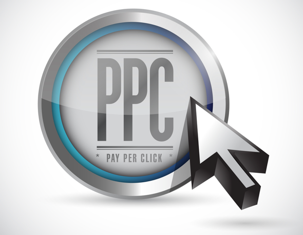

What is Paid Media?
Paid media is best described as traditional advertising that a company buys. This can include old school channels like newspaper and magazine ads, radio and TV spots, direct mail, sponsorships, etc. Digital channels, such as banner ads, paid search, and social ads are the hottest channels today. Paid media initiatives are mostly used for direct selling, but often will target prospects in an effort to promote new customer acquisition, or even to create brand awareness.
What are the Benefits?
Perhaps the biggest advantage about paid media is that it scales really fast, which means you can see immediate results. If you have a message that you want to be seen by the mass market, paid media is the right channel to do that. It can drive traffic, and jumpstart marketing efforts. While it can certainly be expensive, you have complete control over the creative, content and marketing spend.
What are the Challenges?
The disadvantages with using paid media alone are that consumers often ignore pure “brand messages” since they are already inundated daily with advertising messages; and not just from your competitors either. Every other large brand with a marketing message and a significant budget is fighting for their attention
How Can You Leverage It?
One key way to use paid media is as a catalyst to feed owned media, and create earned media. Some key considerations:
- Have you defined your objectives about your paid media?
- Do you have analytics in place to measure your success?
- Do you have the budget necessary to support your efforts?
- Where are you directing your audience?
- Are you communicating a consistant message aligned with your objectives?
Answering these questions early on can save you time, money and headache down the road.
(Sources: Forrester Research and Hootsuite)